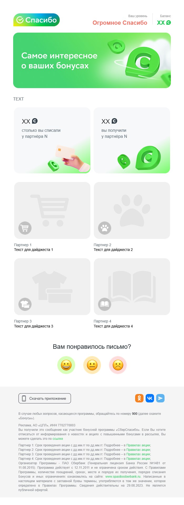
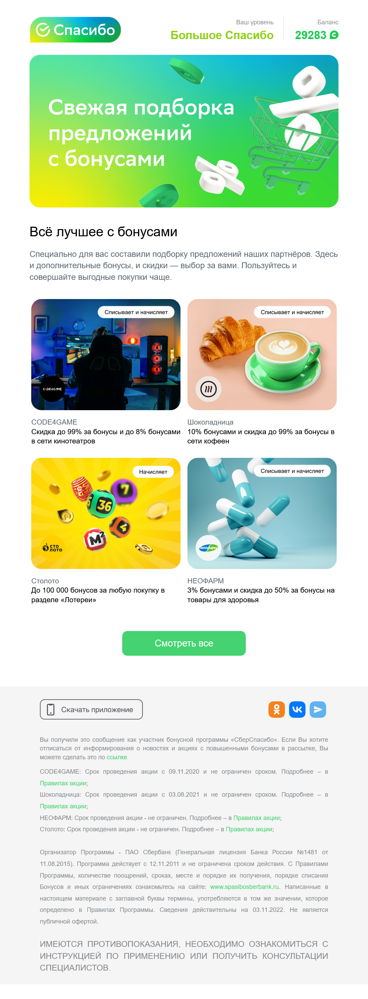

Marketing Automation · СберСпасибо
Автоматизация персонализированного дайджеста
Персонализированная рассылка с подборками предложений для
разных сегментов аудитории собиралась вручную сразу
несколькими командами — процесс растягивался на дни.
Спроектировала систему автоматического наполнение кампании данными
напрямую из базы данных предложений на сайте.
Это позволило не только сократить время работы над сборкой дайджеста, но и раширить возможности персонализации рассылок.
Весь контент на макете сформирован путем автоматической подстановки из базы данных.
Задача
Ручной перенос данных, изображений, ссылок, UTM и юридической информации под каждую регулярную подборку ограничивал частоту рассылок и значительно затрачивал время нескольких команд.
Решение
Настроила логику автоматической подстановки контента по сегментам в Sendsay в интеграции с SAS: один сценарий стал обслуживать любые персонализированные подборки без ручной пересборки кампании под каждый сегмент.
Персонализация контента
Спроектировала универсальный макет дайджеста; Настроила логику отображения контента для сегментов аудитории, переданных продуктовой командой — разные подборки предложений внутри одного сценария рассылки.
Источник данных
Нашла способ подтягивать актуальные данные напрямую из карточек предложений на сайте — без повторного ручного заполнения кампании.
UTM и аналитика
Настроила автоматическое формирование ссылок и UTM-разметки для каждого предложения в рассылке.
Координация с командами
Согласовала процесс с разработчиками, копирайтерами и аналитиками — автоматизация не потребовала постоянного вмешательства смежных команд после внедрения.